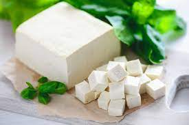

Tofu

Ingredientes
- 1kg de soja de grãos
-
4 limões espremidos(dou preferencia ao limão, mas se houver dificuldade
em encontrar, pode usar o taiti)
- 2 colheres(sopa) de sal
-
2 litros de água filtrada(que deverá ser colocada para liquificar a
soja)
Modo de Preparo
-
Deixe a soja em grãos de molho de um dia pra outro, com agua até cobrir.
-
Procure tirar um pouco da pele da soja que se desprenderá com certa
facilidade.
-
No outro dia, liquidifique a soja e adicione água para não danificar o
liquidificador. Depois de pronto o processo, coloque esse 'caldo' em uma
panela alta (eu uso a de pressão), e leve ao fogo alto até ferver, não
deixe isso no fogo, pois ferve e cai idêntico ao leite.
-
Quando ferver, misture o suco dos 4 limões com o sal, e desligue o fogo
e jogue essa mistura no caldo.
-
Mexa delicadamente, acontecerá desta mistura coalhar quase que
imediatamente.
-
Em uma 'queijeira' (se nao tiver pode usar o escorredor de macarrão,
coloca um pano de prato dentro e a mistura em cima, para ficar um coador
bem fino) e coloque toda a mistura.
- Ela irá soltando água, igual ao preparo de queijos convencionais.
-
Quando já estiver saindo quase toda a água, convém clocar um 'peso' em
cima e deixar até obter o ponto que você deseja (mais mole ou mais duro
e também mais seco).